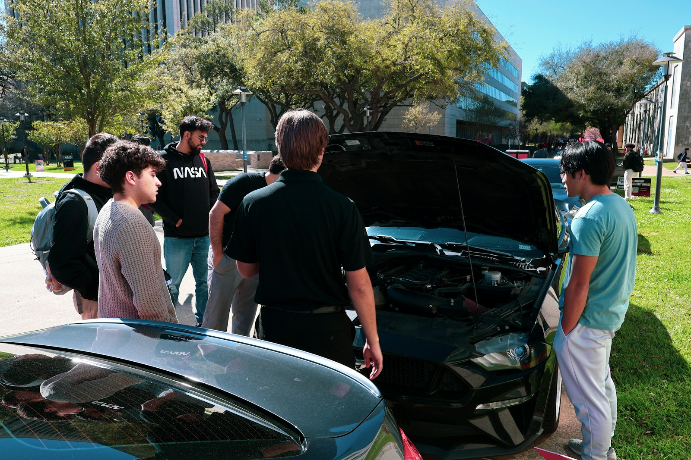
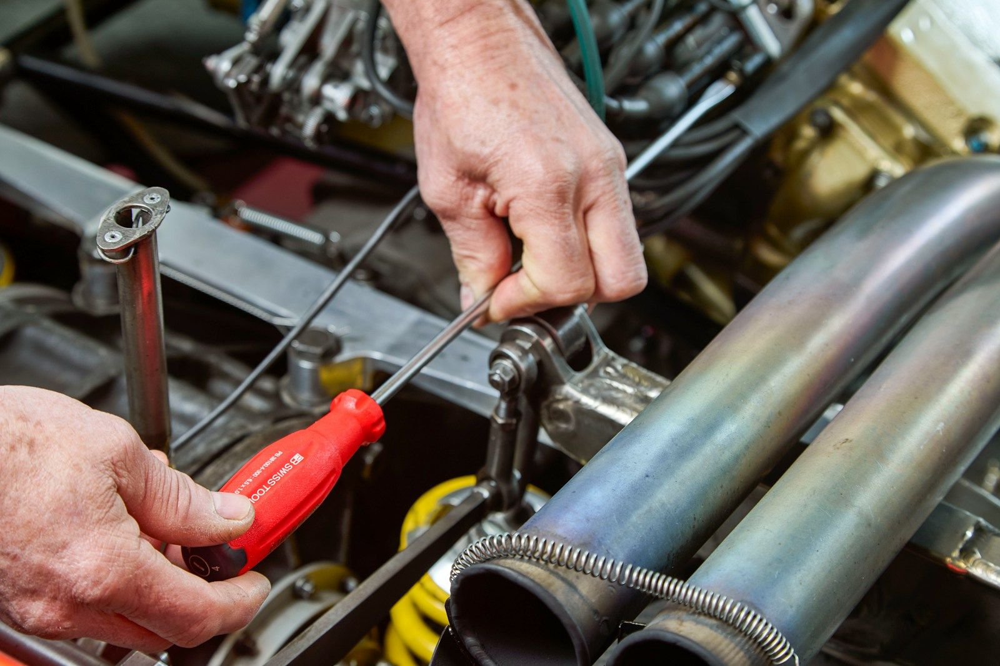
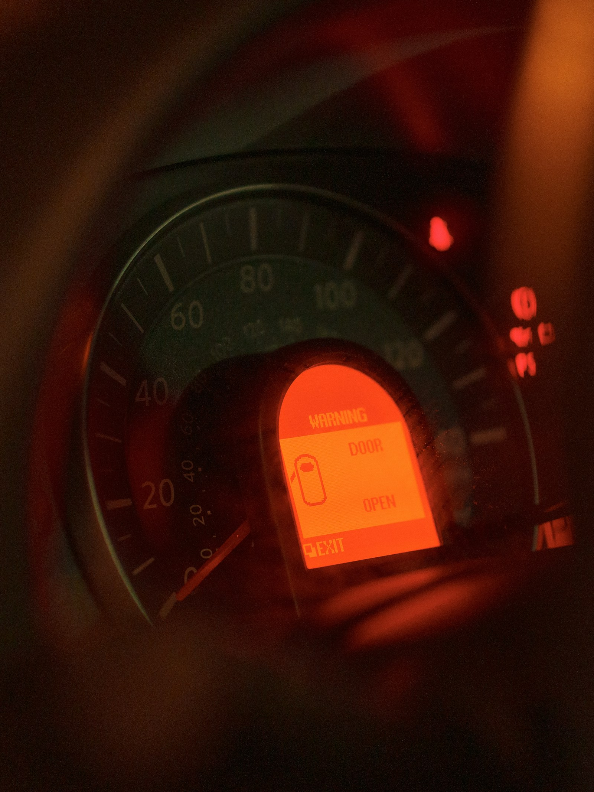
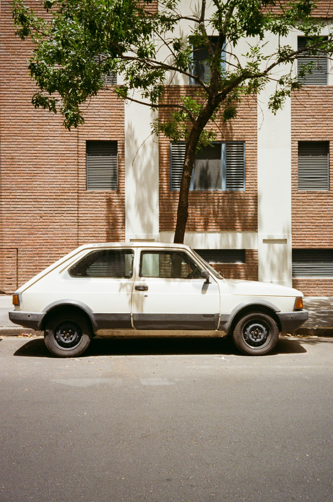
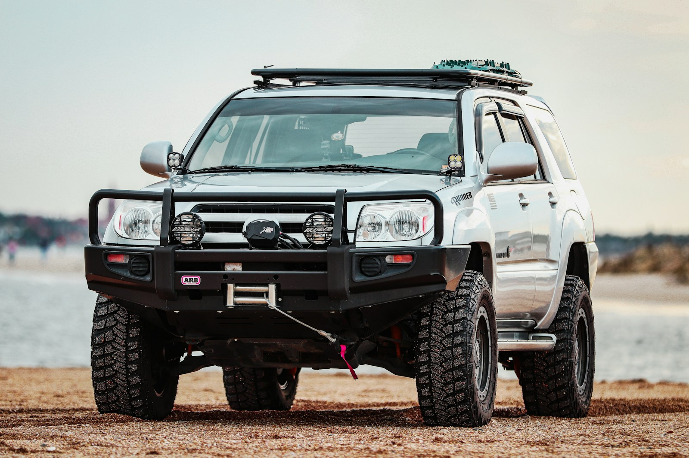
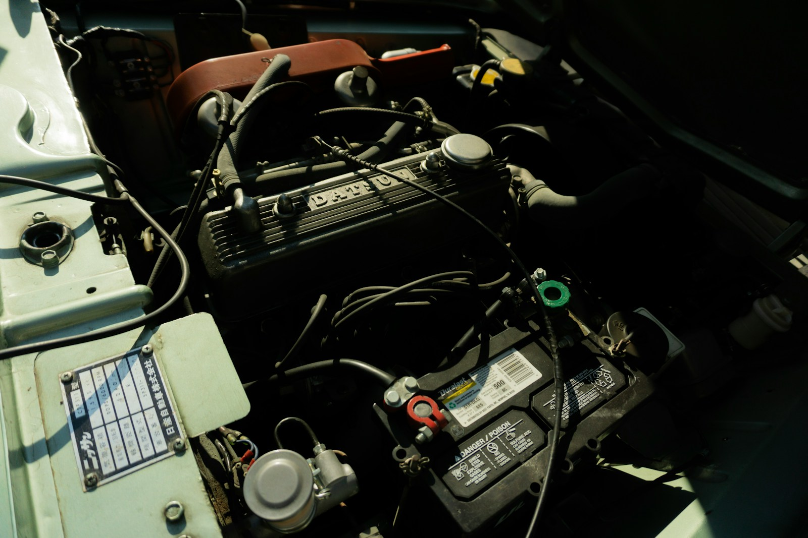
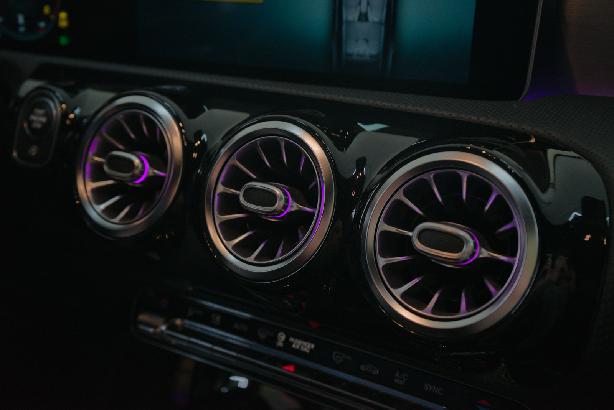
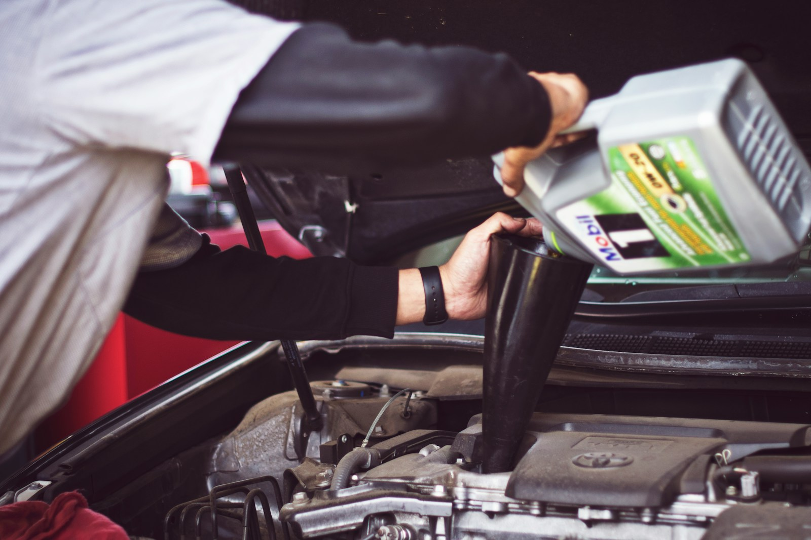

شراء
كيف تشتري سيارة مستعملة بدون استعجال؟
خطوات فحص مختصرة تساعدك تقلل المخاطر قبل توقيع المبايعة.
اقرأ المقال
دليل عربي للسيارات
مقالات واضحة تساعدك تختار سيارتك، تحافظ عليها، وتفهم تكاليفها قبل القرار.
ابدأ بدليل شراء سيارة مستعملةآخر الأدلة
نكتب للناس اللي تبغى قرار واضح، مو كلام مبيعات. كل مقال هنا مبني على أسئلة حقيقية: كم تكلف الصيانة؟ وش أفحص قبل الشراء؟ ومتى تكون التقنية الجديدة مناسبة لك؟

خطوات فحص مختصرة تساعدك تقلل المخاطر قبل توقيع المبايعة.
اقرأ المقال
متى تفحص الزيت، الإطارات، الفرامل، والسوائل الأساسية.
اقرأ المقال
تغييرات صغيرة في القيادة والصيانة تظهر أثرها خلال شهر.
اقرأ المقال
الفروقات المهمة في التكلفة، الشحن، الصيانة، والاستخدام.
اقرأ المقالنقاط مهمة قبل مقارنة عروض التأمين الشامل وضد الغير.
اقرأ المقال
المقاس، تاريخ الإنتاج، الحرارة، والسرعة بطريقة سهلة.
اقرأ المقالمساحة، أمان، راحة، وتكاليف تشغيل بعيدة عن الدعاية.
اقرأ المقال
معاني أشهر التحذيرات وخطوات التعامل معها بهدوء.
اقرأ المقال
دليل سريع للموازنة بين السعر، البنزين، والصيانة.
اقرأ المقال
شرح مبسط يساعدك تعرف النظام المناسب لاستخدامك.
اقرأ المقال
تفاصيل صغيرة في الهيكل والطلاء قد تكشف تاريخ السيارة.
اقرأ المقال

أعراض ضعف البطارية وما الذي تفحصه قبل الاستبدال.
اقرأ المقال

طريقة عملية لاكتشاف الراحة والأصوات والمشاكل المحتملة.
اقرأ المقالقبل الشراء
لا تعتمد على لمعان السيارة فقط. افحص الهيكل، العداد، تاريخ الصيانة، أداء القير، درجة حرارة المحرك، وحالة الإطارات. إذا حسيت أن البائع يستعجل القرار، خذ خطوة للخلف.